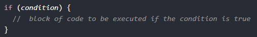
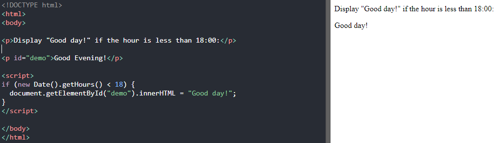

JAVASCRİPT İF-KOSUL YAPILARI
Koşullu ifadeler, farklı koşullara dayalı olarak farklı eylemler gerçekleştirmek için kullanılır.
Koşullu İfadeler
Javascript'te aşağıdaki koşullu ifadelere sahibiz:
Belirtilen bir koşul doğruysa, yürütülecek bir kod bloğu belirtmek için ıf kullanırız
Aynı koşul false ise, yürütülecek bir kod bloğu belirtmek için else kullanırız
İlk koşul yanlış ise, test edilecek yeni bir koşul belirtmek için else if kullanırız
Çalıştırılacak birçok alternatif kod bloğu belirtmek için anahtarı kullanırız
İf Deyimi
Bir koşul doğruysa çalıştırılacak bir JavaScript kodu bloğu belirtmek için if deyimini kullanırız.
Eğer küçük harflerle olduğunu unutmamalıyız. Büyük harfler (If veya IF) bir JavaScript hatası oluşturur.
JavaScript'de kullanımına bir örnek verelim:
Else Deyimi
Koşul false ise yürütülecek bir kod bloğu belirtmek için else deyimini kullanırız.

Şimdi kod içerisinde kullanım şekline hep birlikte bakalım;


Bu iki kod örneğinde hem önceki derslerimizin tekrarlarını yapmış bulunuyoruz hem de else ifadesinin ne işe yaradığını görmüş oluyoruz.
Else-İf Deyimi
Aslında birçok programlama dilinde if-else kullanımı aynı mantıktadır.
İlk koşul false ise, yeni bir koşul belirtmek için else if deyimini kullanırız.

Kod parçasında örnek verecek olursak.